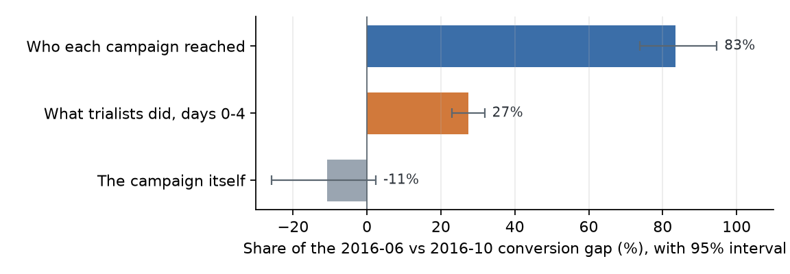
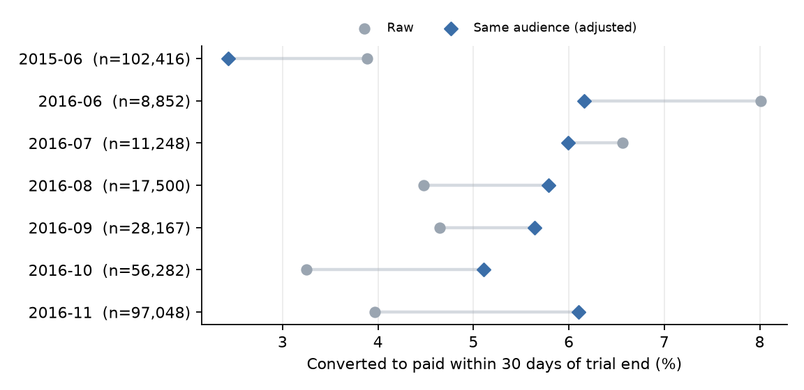
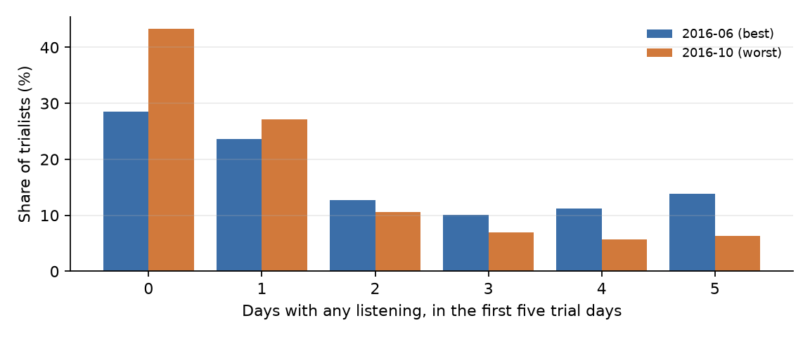
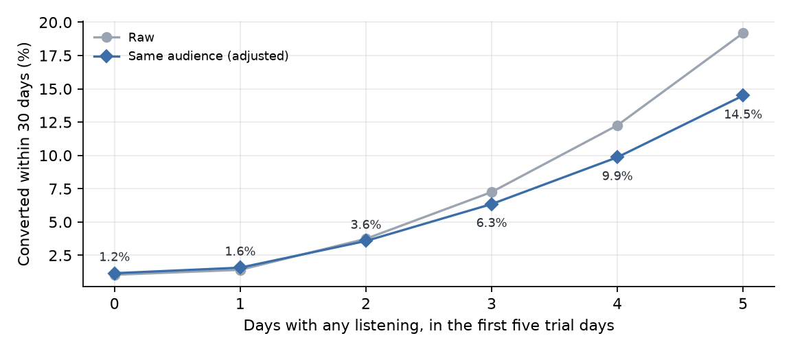

Who a campaign reaches matters more than what trialists do
Why some free-trial campaigns convert twice as well as others: a decomposition of 321,506 free trials on a music-streaming service.
The best free-trial campaign in this data converted 8.01% of trialists to paid within 30 days of the trial ending; the worst converted 3.25%. A growth team looking at that gap has to decide where to act: targeting (the campaigns reached different people) or onboarding (the trial experience differed). This analysis splits the gap between the two.
95% CI 74–95%
95% CI 23–32%
95% CI −26% to +2%

Raw comparisons mostly measure audience
The 7 campaigns with at least 2,000 trials range from 3.25% to 8.01% raw conversion. Shown at the same audience mix, every 2016 campaign lands between 5.1% and 6.2%: the biggest campaigns looked weak because of who they brought in.

| Campaign (trial start month) | Trials | Raw | Same audience |
|---|---|---|---|
| 2015-06 | 102,416 | 3.89% | 2.43% |
| 2016-06 | 8,852 | 8.01% | 6.16% |
| 2016-07 | 11,248 | 6.56% | 5.99% |
| 2016-08 | 17,500 | 4.48% | 5.79% |
| 2016-09 | 28,167 | 4.65% | 5.64% |
| 2016-10 | 56,282 | 3.25% | 5.11% |
| 2016-11 | 97,048 | 3.97% | 6.10% |
Who: signup channel and city
The worst campaign drew 71% of its trialists through one signup channel, against 22% for the best; trialists from that channel converted at 1.4%, against 6.2% for everyone else. The same pattern holds for one city (79% vs 53% of trialists, converting at 1.7%). Those two traits carry most of the audience effect.
What: showing up in the first days
43% of the worst campaign's trialists never listened during the first five trial days, against 28% for the best. Listeners in the worst campaign also listened about half as long (median 53 vs 106 minutes), but finished songs at the same rate (45% vs 47%). The difference is how much people used the product, not how they reacted to what they heard.

At the same audience, conversion climbs from 1.2% for trialists who never listened to 14.5% for those who listened on all five days. One active day barely moves it; the climb starts from the second.

What I would test at Suno
These are hypotheses from a different product's data, framed as experiments, not claims about Suno.
- Judge acquisition sources on trial-to-paid, not trial volume. Here the two largest campaigns were among the weakest because of where their trialists came from. A holdout that shifts spend between sources would show whether conversion follows.
- Get silent trialists to a second active day. A randomized nudge in the first trial days for people who haven't come back, measured on conversion, not engagement. The analogue at Suno might be creating or finishing a first song; the experiment would tell.
- Report campaigns at a fixed audience mix. Raw campaign comparisons mostly measure who signed up. Adjusted rates make offer and creative tests comparable.
Method and caveats
Data. 410,502,905 daily listening rows and 582,058 free-trial transactions from KKBox's public WSDM Cup 2018 release. No day of logs was missing (0 gap days found).
Population. First-time, $0, 7-day trials starting on or after 2015-04-01 with a complete 30-day follow-up: 329,370 trials. Trialists who paid during the trial (8,232) and trialists missing from the member file (48,147, who almost never converted, which points to an export artifact) are excluded. Months that looked like 85–99% conversion turned out to be in-trial payers or existing customers and fall out under these rules. Converted means paid within 30 days after the trial ended.
Model. Logistic regression of conversion on campaign, five audience traits (signup channel, city, age band, gender, time since registration) and six trial-week behavior measures in bands (days active, minutes, unique songs, completion, early skips, first listen day). The gap between the best and worst campaign is split with Shapley values over two counterfactual swaps (audience; behavior from similar trialists), keeping the worst campaign's own effect. Intervals: 200 bootstrap refits, trialists resampled within campaign.
Caveats. The results are associations, not causes: people who already intend to pay probably listen more. "Campaign" is the trial start month; the data has no campaign ID. Age and gender are blank for most members; dropping them changes the split by about one point. Published tables have at least 20 trialists per cell.